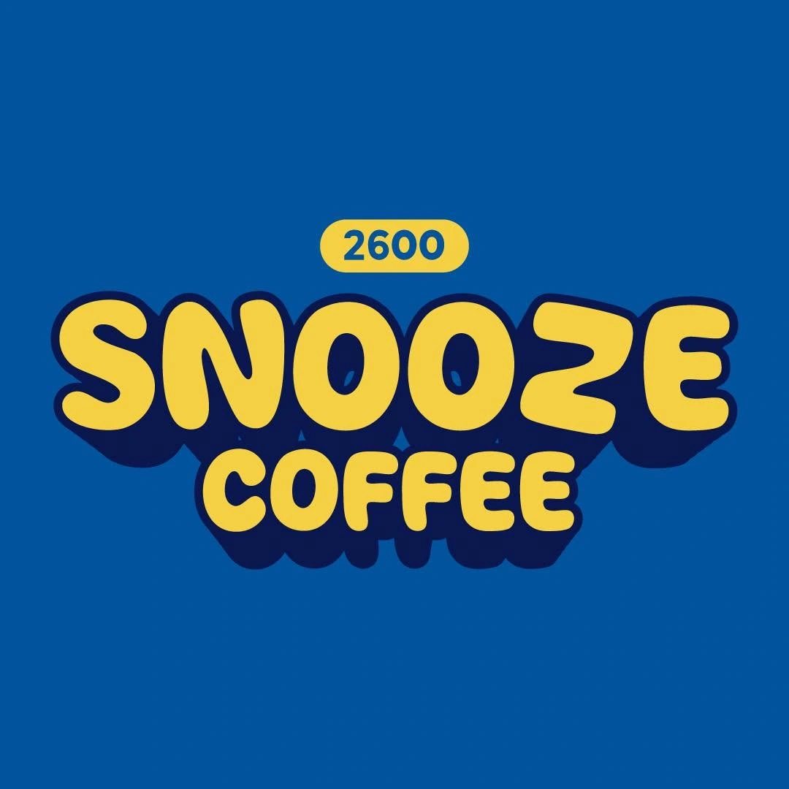

A warm cup.
For the cool days and the slow mornings. Ask us for your usual.

Find your SnoozeTHE SNOOZE SELECTION
Start with a drink. Add a bite. See where the afternoon goes.
THE UNOFFICIAL RULE
Bring someone who always says “just one coffee.”
Find us in BaguioSAME CORNER. YOUR NEXT CUP.